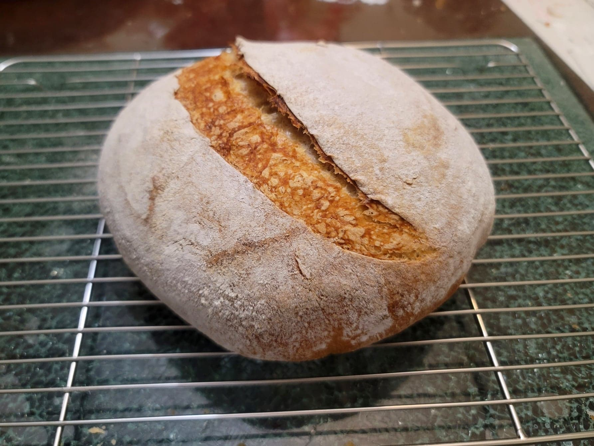

Pain au Levain

Ingredients:
Levain:
- 75 g Flour
- 37 g Water, room temperature
- 14 g Ripe sourdough starter
Pain au Levain:
- 241 g water, room temperature
- 315 g Flour
- 27 g Rye flour
- 9 g Salt
Instructions:
- The night prior, prepare the levain. Combine the flour, water, and starter and knead into a small ball of dough. Place into a lightly oiled bowl and cover. Let ferment overnight, about 12 hours, in a dark and room temperature location. It is ready when it has doubled in size and is either domed on top or has just begun to sink in the middle.
- When the levain is ready, tear the levain into small pieces and place into a large bowl or the bowl of a stand mixer with the water. Then add the rest of the ingredients. Mix the ingredients to form a dough. If using the stand mixer, knead with the dough hook on the lowest setting for 2 minutes. Then cover and let rest for 30 minutes.
- Knead the dough again for about 3 minutes by hand or 1 1/2 minutes in a stand mixer on speed 2. The dough will be sticky.
- Transfer to an oiled bowl and cover. Let rise for 60 minutes.
- Preform some folds on the dough and the re-cover. Let rise for another 60 minutes.
- Transfer the dough to a lightly floured surface. Preshape into a round and then cover, seam-side up, for about 20 minutes.
- Shape the dough into a round and dust with flour. Transfer to a banneton (optionally flour the banneton with rice flour), seam-side up. Cover with a tea towel and let proof for 120 minutes, or until fully proofed (the dough should indent briefly before bouncing back).
- Preheat the oven with a dutch oven inside to 450 degrees Fahrenheit.
- Dust some parchment paper with semolina. Transfer the dough to the parchment paper seam-side down. Score with a lame to create a seam. Remove the dutch oven from the oven and transfer the dough with the parchment paper into dutch oven. Cover, return the dutch oven to the oven and bake for about 20 minutes. Then uncover and bake for another 15-20 minutes, or until it reads an internal temperature of 195 degrees.
- Remove from oven and allow to cool completely on a rack before serving.